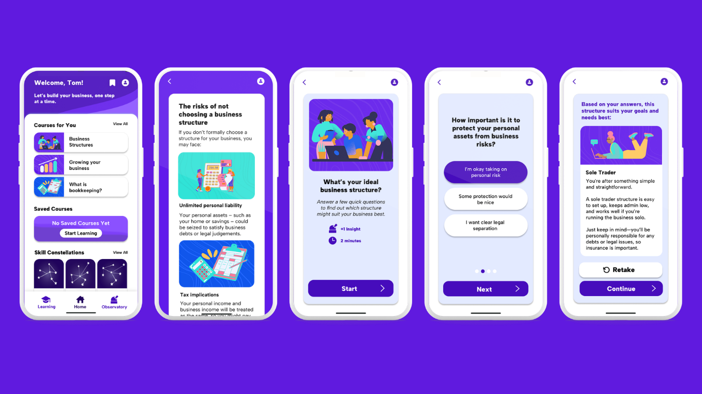

Helping Entrepreneurs Take Their First Step
BrightPath was developed in response to a design brief from Xero, the accounting software platform. The app targets aspiring entrepreneurs in the earliest stages of business creation — a group that is often underserved, particularly those with accessibility needs.
Taking a mobile-first approach, BrightPath offers guided learning modules across key business topics, with quizzes and progress-tracking built in. The goal: make entrepreneurship education inclusive, clear, and confidence-building.
WCAG
2.0 Accessibility Standard
Key Features
Three core feature areas shaped the app experience, each informed by research into ADHD-supportive design patterns and accessibility frameworks.
📚
Learning Modules
Multimedia-rich guides covering key business topics, designed to be digestible and self-paced, with content kept concise for users with ADHD.
🔭
The Observatory
A central hub that saves key information from completed modules, allowing users to build an overview of their business knowledge and see their visible progress.
🎮
Gamification & Quizzes
Progress tracking and quiz-based engagement reward users for completing content — keeping motivation high without cluttering the interface.

Design Process
The project ran across 12 weeks using agile methods — short sprints, regular reflection, and continuous feedback from both mentor Rusaila Bazlamit and Xero representatives Bronwyn Rees (Lead Product Designer) and Bobby Ly (Accessibility Analyst). A key challenge was balancing scope. Early iterations tried to do too much at once, leading to a pivot: focus on fully realising the learning module user flow and Observatory feature rather than partially building the whole app.
Week 6
Accessibility First
Mentor flagged the design was becoming generic. Refocused on WCAG 2.0 compliance and distinctive accessibility considerations.
Week 7
Gamification Problem
Used the Five Whys technique to uncover the root issue: lack of reference material for ADHD-supportive gamification. Research led to the Observatory concept.
Week 8
Scope Management
Struggled with prioritisation. Separated achievements into its own tab, refined Observatory, built out onboarding, and added multimedia examples.
Week 9
Client Presentation & Pivot
Industry partners flagged that the app looked too similar to Xero's existing UI. Switched to custom graphics for stronger contrast and identity.
Week 11
Final Focus
Narrowed primary accessibility audience to ADHD users. Committed to one fully-realised user flow: learning module → Observatory.
Accessibility Considerations
Understanding and applying the WCAG 2.0 framework was a central challenge. Alongside Nielsen Norman Group articles and video tutorials, the design choices were stress-tested against the real needs of users with ADHD.
🎯
Hit Box Sizes
Large enough for comfortable interaction
📖
Concise Content
Skimmable throughout learning modules
⚙️
Onboarding Settings
Accessibility options inspired by Xbox
🔄
Observatory Reference
Persistent tool for revisiting content
📐
Auto Layout
Responsive & consistent Figma components
♿
WCAG 2.0
Accessibility compliance throughout
User Testing
A participatory walkthrough was conducted in Week 10 with a participant who has ADHD and is interested in starting an electrical contracting business — making him a primary target user for BrightPath. The participant walked through the prototype while asked questions about their expectations — what they thought features did, and what they expected to happen next at each step.
✓
Observatory Validated
Concept was understandable and useful
✓
User-Friendly Flow
App felt friendly and clear to navigate
✓
Progress Tracking
Visible progress highly valued by user
Final Presentation & Client Feedback
The final presentation was delivered at RMIT on 27 May 2025 to RMIT staff, mentors, and Xero representatives Bronwyn Rees and Bobby Ly. The session highlighted the learning modules, onboarding experience, and the Observatory feature.
Client feedback highlights:
- The astronomy theme was well received, though its visual consistency across the app needed refinement
- Presentation delivery was praised for its effective use of statistics to engage the audience
- Recommended choosing more visually distinct presentation slides from the app screens to improve audience experience
Reflection & Learnings
🔄
Agile Practice
Frequent iteration in response to mentor and client feedback was the backbone of the project. I'd refine my approach further with more structured sprint plans and earlier user testing cycles.
⚖️
Prioritisation
Scope creep was a real challenge. I learned that doing one thing exceptionally well — a fully-realised learning flow — is more valuable than many half-finished features.
♿
Accessibility Design
Applying WCAG 2.0 in practice revealed how nuanced inclusive design is. Designing for ADHD pushed me to rethink information density, layout clarity, and the role of visual progress cues.
🤝
Working with Clients
Industry feedback from Xero was invaluable — and sometimes challenging. Learning to balance client vision with design rationale, and to advocate for users within those constraints, was a key professional skill gained.
Future Considerations
If continued, the next phase of BrightPath would deepen the Observatory's functionality, strengthen the app's visual brand consistency, and refine learning content specifically optimised for ADHD learners. Further user testing with a broader cohort would validate accessibility decisions at scale, and the content could be curated more intentionally to position Xero as the natural next tool for users ready to formalise their business.